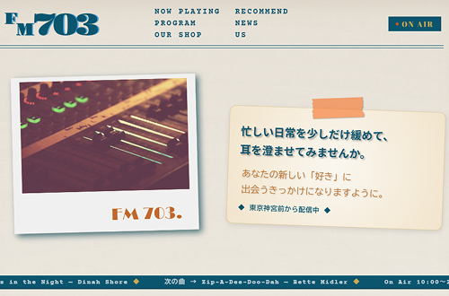

WORKS
制作物

- 概要
- 学校の卒業制作の課題で、FMラジオ局のホームページを作成。
- 使用ツール
- Illustrator / Photoshop / Visual Studio Code
- 制作期間
- 0.5か月(2026年4月中旬〜4月下旬)
デザイン 4日 / コーディング 9日
- 対応範囲
- カンプ制作 / 構成 / レイアウト / 画像補正 / デザイン / コーディング /
- 課題
-
- どういうサイトにしていくか、デザインの方向性、掲載する内容などを決めて進める。
- レスポンシブ対応もできるようにする。
- 感想
-
- 当初予定していたサイトよりもボリュームが大きくなってしまい、
- 製作時間ギリギリになってしまった。
- 好きなものをたくさん詰め込んだ制作となり、大変でしたが気に入ってる。